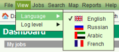

The SOLA State Land Desktop supports the English and Amharic (Ethiopia) language for display of labels, messages and reference values and has partial translations for the French, Arabic and Russian languages. To change the language, select your preferred language from the View - Language menu option on the main menu. Once a selection is made, SOLA State Land will do a soft restart and then display with the selected language.

Change Language